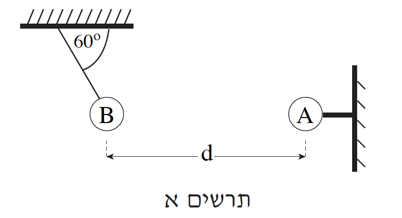
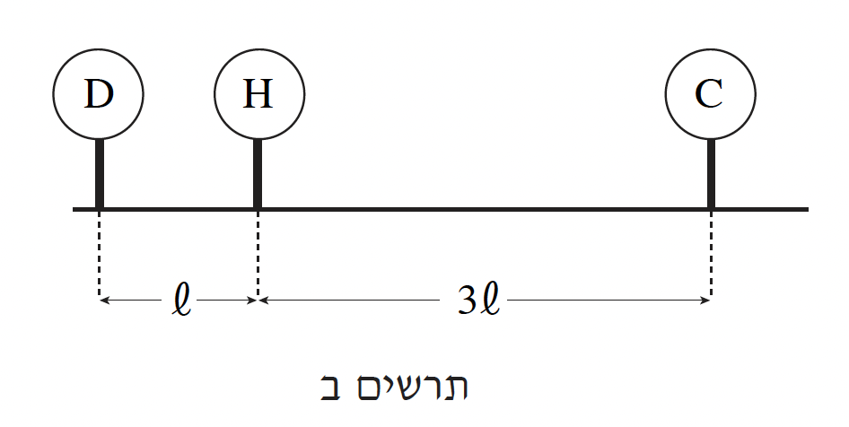

תלמיד ערך שלושה ניסויים באלקטרוסטטיקה.
בניסוי הראשון השתמש התלמיד בשני כדורים מוליכים \(A\) ו- \(B\). כדור \(A\) טעון במטען חשמלי חיובי, ומוחזק במנוחה באמצעות מוט אופקי מבוֹדֵד. כדור \(B\) טעון במטען חשמלי שלילי, ותלוי בקצה חוט מבוֹדֵד שקצהו האחר קשור לתקרה (ראו תרשים א). מסת החוט ניתנת להזנחה. מרכזי הכדורים נמצאים באותו גובה.

הערכים המוחלטים של מטעני הכדורים שווים זה לזה. כאשר שני הכדורים במצב מנוחה, מרכזיהם נמצאים במרחק \(d = 0.3m\) זה מזה. מסת הכדור \(B\) היא \(10gr\), והחוט שהוא תלוי עליו יוצר זווית של \(60^\circ\) עם התקרה.
הניחו כי רדיוסי הכדורים קטנים מאוד ביחס למרחק בין הכדורים.
א.סרטטו את תרשים הכוחות הפועלים על כדור \(B\). ציינו מי מפעיל את כל אחד מהכוחות. (8 נקודות)
ב.חשבו את המטען של כדור \(B\). (10 נקודות)
ג.בניסוי השני השתמש התלמיד בשני כדורים \(C\) ו- \(D\) בעלי מסות שוות. הכדורים טעונים במטענים חיוביים, כך שהמטען של כדור \(C\) גדול פי \(3\) מהמטען של כדור \(D\).
כל אחד משני הכדורים תלוי על חוט מבוֹדֵד באותו אורך, שמסתו זניחה. אחרי הטעינה התרחקו הכדורים זה מזה, והתייצבו במנוחה. האם הזוויות ששני החוטים יוצרים עם התקרה שוות זו לזו? נמקו את תשובתכם באמצעות סרטוט תרשים כוחות. (10 נקודות)
ד.בניסוי השלישי השתמש התלמיד בשני הכדורים \(C\) ו- \(D\) ובכדור נוסף \(H\). הכדורים מוחזקים באמצעות מוטות מבודדים כמתואר בתרשים ב. שלושת הכדורים טעונים במטענים חיוביים.

נתון: \(q_C = 3q_D\).
מרכזי שלושת הכדורים נמצאים לאורך קו ישר, והמרחק בין מרכז כדור \(C\) לבין מרכז כדור \(H\) גדול פי \(3\) מהמרחק בין מרכז כדור \(D\) למרכז כדור \(H\). האם שקול הכוחות החשמליים שהכדורים \(C\) ו- \(D\) מפעילים על כדור \(H\) שווה לאפס? נמקו. (5.33 נקודות)